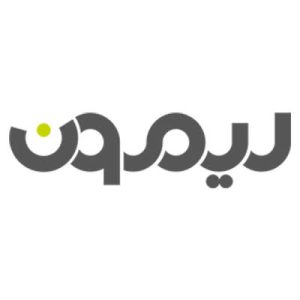

نوین نگاه کیست؟
راهکار تبلیغاتی باید برای فضای واقعی ساخته شود
ما پروژه را با شناخت محیط، مخاطب و هدف برند شروع میکنیم. سپس طراحی، انتخاب متریال، تولید و نصب را در یک مسیر هماهنگ پیش میبریم تا نتیجه نهایی با ایده اولیه فاصله نداشته باشد.

01
شناخت پیش از طراحی
ابعاد، دید مخاطب، شرایط نصب و هویت بصری پیش از شروع بررسی میشوند.

02
ساخت تحت کنترل
تولید مستقیم کمک میکند کیفیت قطعات، متریال و جزئیات قابل کنترل باشد.

03
تحویل مسئولانه
نصب، تنظیم و کنترل نهایی بهعنوان بخش جداییناپذیر پروژه انجام میشود.